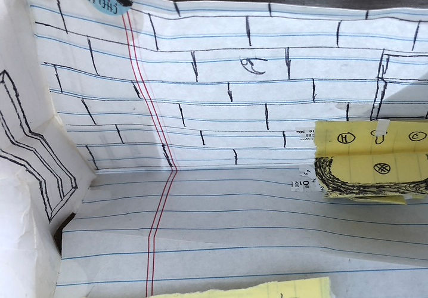
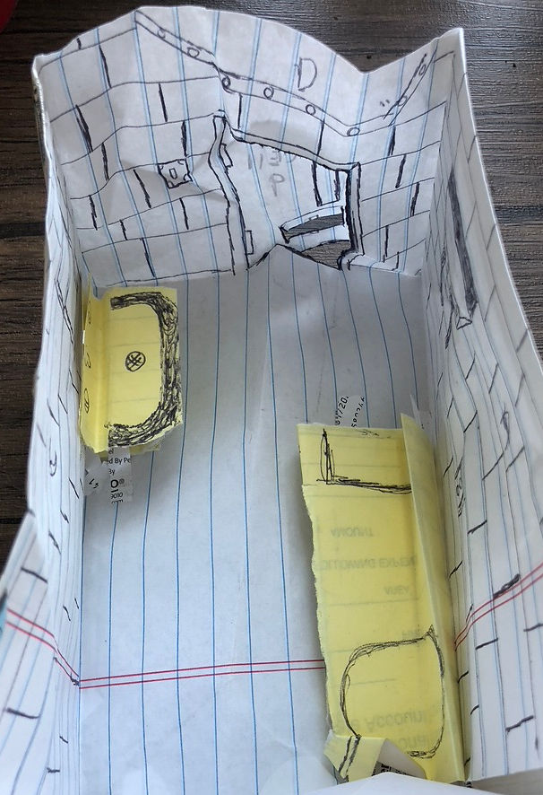

Featured Stories
Statements from individuals who have personally experienced or professionally witnessed solitary confinement at the Department of Corrections (RIDOC):
Hear From Survivors of Solitary Confinement in Rhode Island
Joseph Shepard
"The traumas I had in High Security, in this I’m speaking of specifically, 23 hour lockdown, imagine you have a child and this child has a mental health breakdown. What are you gonna do?
What these people do, correctional officers, they take these children—because we are all someone’s child, you know—they take us and what they do when we have a mental health breakdown in this cell, there’s a slot in this door right here, they spray a riot sized mace can in that slot until you almost pass out.
And if you continue to have a mental health breakdown after they spray that riot can, they’re gonna spray another one. And then when you fall, they come in the cell, five, six, seven people, they cuff you up, damn near dislocate your shoulder, bruises all on you. They strip you butt naked and take you to a shower that they control the water temperature, it’s either too hot or too cold, never just right, ‘cause remember, we’re all dehumanized."
Tarah Dorsey
"I spent 2 years in seg, segregation, solitary confinement, for different reasons. To much commentary, too much hygiene products, too much food in my locker, down to sharing food.
"It's built to break you, to break your spirits, to break your mind.
"I used to call seg[regation], 'the Warehouse of the Broken.'"
Roberta Richman
Former warden of RIDOC's women's prison and Assistant Director of Rehabilitative Services
"You're talking about people who are vulnerable to begin with, who have mental illness, who have struggled with poverty and violence all their lives... How can someone retain their sanity?"
Letters from individuals incarcerated in the RI High Security Center (High Side)
“Solitary Confinement”
What is the purpose? If I’m deemed too nefarious for life then
why not sentence me to death?
At least the psychological “via-Dolorosa” will finally end.
I wake up each day and wonder if these cement blocks are going
to finally clench my soul so tightly that that will squeeze the life
out of me. See I’ve been hated, abused, tortured, scared, hungry,
worn out but the worst pain is the feeling of loneliness. That’s
the talon that pierces the heart the deepest, then leaves that
deep wound empty.
Loneliness isn’t something so horrid and painful that needs to be
taken away or extinguished. No!
Loneliness is the absence of love.
The human soul needs love to thrive and exist. Love heals wounds,
not time, not solitary confinement.
Love is the music to the soul’s ear. An eternal symphony of healing.
Love is the spectrum of colors to the soul’s canvas that paints a
picture of hope. Love is the sculptor’s clay that molds the future for
the soul.
These walls do strange things to the human “psyche.” I’ve cried
so hard that I thought my tears were blood.
I’ve feared so much that I thought my heart and head would explode.
Where are you love??
My soul hungers, my soul thirsts. Not just to be loved but to love.
Tell me friend how do these solitary walls heal the mentally ill?
What’s the purpose?
If it’s to cause hurt then the process is complete. I’m in agony!
I’m so empty I feel like a robot at times. I’m beyond tears, beyond fears.
I’ve got a new friend outside my window, a spider. LOL! Yes I’ve named her Charlotte (for obvious reasons).
Sounds crazy but I talk to her for hours. I even get up to go to the bathroom in the middle of the night and check on her. I would even share half of my food with her if I could. I’m crying now! I know it sounds a tad bit crazy but my heart just wants to love. I’m sorry for all my selfish actions. I’m sorry for all and any hurt I’ve ever done to anyone.
If I could take my heart out of my chest and hold it in front of my for the world to see I’m sure even those most in favor of “penal injustices” would change their outlook.
When will this hurting cease? When will this void be filled?
Another strange thing is when I look outside through my window I see a world of life.
A sort of contrast to my cell. This chamber of death.
I lay on my bunk and ask myself, “Am I in my casket or tomb?”
Trust me this solitude is not a friend. It’s an interminable well of darkness. So real! So painful!
I would give my left arm to just put my feet in the hot sand on the beach. To be with my loved ones. To hug my family. To hold a woman’s hand. To see a sunset.
Boy what a long day it’s been. When will it be over?
Please try to hear what I’m saying. I’m screaming within!
Where is the rehabilitation? Where is the help?
Truth be told I can’t hurt any more, only longer.
I still don’t know how to love please don’t snuff out that small but feeble flame.
“Solitary confinement.” What a long day it’s been!

Photos of a diorama of a High Side cell

In this letter, this author explores why they believe the High Security Center should be closed.
7/26/20
"As of now, I’ma take this time to tell you why this building should be closed down:
-
There’s no ventilation coming out the vents and it’s 90 degrees outside.
-
They keep a light on 15 hours a day everyday, and we get booked if we put a towel over the bunk to shade the light.
-
95% of people in this building are here just for a fight, and they get stuck here.
-
Out of that 95%, about 45% have a medical condition and there’s no duress button in the cells to alert medical and/or staff about it. Some inmates that have asthma can’t even have their pumps in their cells.
-
There’s no smoke detector or sprinkler system in none of the cells, which is a fire safety code violation and health code violation
-
We get one toothbrush a month/2 months
-
Not enough food on the trays
-
Administration don’t follow their own rules/policy, but enforce it on us, then book us for every little thing only so when we go to the classification, we get stuck in this building, just so they can keep it open.
-
There’s no programs at all in this whole building but in one block and in order to get into it, the teacher got to put you in. You can’t just go on a list then get in.
-
No school: If you want to learn a trade to take home and start my own business, I can’t because they don’t have nothing for us.
-
All the tax payer’s money that’s going to keep the building open, that’s supposed to be for the jail, is going in all their pockets. If it wasn’t, why is there still issues and more money needed
-
Some toilets leak water and been broken for months
-
In some cells, the cold water don’t work and in others the hot water don’t work.
If this is a lie, just send investigators in to talk to people and you’ll see. There are also people who been here for 4, 5, 6, 7 years and the longest anybody can be here booking free is 2 years.